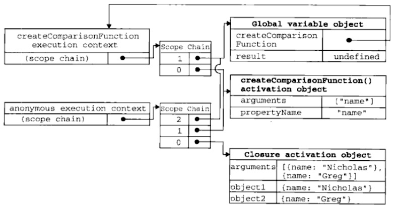

本文介绍JavaScript函数的声明调用、参数传递、执行环境和作用域，以及函数表达式、匿名函数、闭包等，并且包含了ES6新增的箭头函数等相关内容。
JavaScript中的函数是对象，一种特殊的对象：function objects(函数对象)。
声明与调用
ES6之前，JS函数声明基本语法为：
1 | //FunctionDeclaration : |
JS函数是对象，函数名实际上是一个指向函数的指针，不会与某个函数绑定，故也可以使用函数表达式定义函数：
1 | //FunctionExpression : |
关键字function后面的函数名是可选的。如果function后面没有标识符，那就叫匿名函数（anonymous function）。
函数调用就是函数名后加一对圆括号包含参数。如果有多个参数，用逗号隔开。
当函数只使用一次时，通常使用IIFE (Immediately Invokable Function Expressions)：
1 | (function() { |
IIFE是在函数声明后立即调用的函数表达式。
ES6 引入了箭头函数：
1 | //ArrowFunction : |
箭头函数在后面的章节中会详细介绍。
参数
JS函数不介意传递进来的参数的个数和类型——参数在内部是用一个数组来表示——函数体通过arguments对象来访问参数数组获取传递给函数的每一个参数。对于arguments对象，可以使用方括号访问其每个元素（第一个参数是arguments[0]），使用length属性确定传递的参数个数。其实，arguments对象只是与数组类似，并不是Array的实例。
按值传递
JS所有函数的参数都是按值传递的。把函数外部的值复制给函数内部的参数，就像把值从一个变量复制到另一个变量。
向参数传递基本类型的值时，被传递的值会被复制到一个局部变量（arguments对象的一个元素）。而向参数传递引用类型的值时，会把这个值在内存中的地址复制给arguments对象元素，这样引用类型参数的变化会反映在函数外部。
JS中的基本数据类型（Undefined、Null、Boolean、Number和String）是按值访问的——可以操作保存在变量中实际的值。而引用类型的值是按引用访问的——引用类型的值是保存在内存中的对象，但JS不允许直接访问内存中的位置，即不能直接操作对象的内存空间。JS操作对象其实是操作对象的引用而不是实际的对象。
复制基本类型时，是在变量对象上创建一个新值，然后把值复制到为新变量分配到位置上。而复制引用类型时，同样也是将存储在变量对象中的值复制一份到为新变量分配到空间中。然而，这个值的副本实际上是一个指针，而这个指针指向存储在堆中的一个对象。复制操作后，两个变量实际上引用同一个对象。
没有重载
JS函数参数是由包含零或多个值的数组来表示的，所以JS函数没有签名。而没有函数签名，真正的重载是不可能做到的。
参数默认值
ES6 开始允许为函数的参数设置默认值，即直接写在参数定义的后面。
1 | function log(x, y = 'World') { |
内部对象
JS函数内部，有两个特殊对象，一个是前面提到的arguments，一个是this。
arguments
arguments对象是所有（非箭头）函数中都可用的局部变量，主要作用是保存函数参数。它还有一个名为callee属性——一个指针，指向拥有arguments对象的函数，即当前执行的函数。
1 | function factorial(num){ |
arguments还有一个属性caller指向调用当前函数的函数。
注意:现在在严格模式下，arguments对象已与过往不同。arguments[@@iterator]不再与函数的实际形参之间共享，同时caller属性也被移除。
this
this引用的是函数据以执行的环境对象。在函数内部，this的值取决于函数被调用的方式。
如果是简单调用，且代码不在严格模式下， this 的值默认指向全局对象。然而在严格模式下，this将保持他进入执行环境时的值，this将会默认为undefined。如果要想把 this 的值从一个环境传到另一个，就要用 call 或者apply 方法。
当函数作为对象里的方法被调用时，它们的 this 是调用该函数的对象。
属性与方法
JS函数是对象，所以函数也有属性和方法。
函数属性包括：
- length：表示函数希望接受的命名参数的个数。ES6中，指定了默认值以后，
length将返回没有指定默认值的参数个数。 - prototype：保存所有实例方法的真正所在，JS面向对象设计的核心。
函数继承而来的方法包括：toString()、toLocaleString()、valueOf()
函数包含的常用的非继承方法包括：apply()、call()、bind()
apply()/call()
apply()和call()的用途都是在特定的作用域中调用函数，实际上等于设置函数体this对象的值。两者作用相同，他们的区别在于接受参数的方式不同。apply()方法接受两个参数：一个是在其中运行函数的作用域，另一个是参数数组。call()方法第一个参数没有变化，变化的是其余参数都直接传递给函数。选择使用apply()还是call()，完全取决于采用哪种函数传递参数的方式更方便。
1 | function add(c, d) { |
使用 call 和 apply 函数的时候要注意，如果传递给 this 的值不是一个对象，JavaScript 会尝试使用内部 ToObject 操作将其转换为对象。
bind()
ECMAScript 5 引入了 Function.prototype.bind。调用f.bind(someObject)会创建一个与f具有相同函数体和作用域的函数，但是在这个新函数中，this将永久地被绑定到了bind的第一个参数，无论这个函数是如何被调用的。
1 | function f(){ |
执行环境与作用域
JS执行环境（execution context）定义了变量和函数有权访问的其他数据，决定了他们各自的行为。每个之行环境都有一个与之关联的变量对象（variable object），环境中定义的所有变量的函数都保存在这个对象中。某个之行环境中的所有代码执行完毕后，该环境被销毁，保存在其中的所有变量和函数定义也随之销毁。执行环境分为全局和局部（函数）两种。全局执行环境是最外围的一个执行环境。在浏览器中，全局执行环境被认为是Windows对象，所有全局变量和函数都是作为Windows对象的属性和方法创建的。每个函数都有自己的执行环境。当执行流进入一个函数时，函数的环境会被推入一个环境栈中。而在函数执行后，栈将其环境弹出，把控制权返回给之前的执行环境。
当代码在这个环境中执行时，会创建变量对象的一个作用域链（scope chain）。作用域链的用途，是保证对执行环境有权访问的所有变量和函数的有序访问。作用域链的前端，始终都是当前执行的代码所有的环境的变量对象。作用域链中的下一个变量来自包含（外部）环境，而在下一个变量对象则来自下一个包含环境，这样一直延续到全局执行环境。标识符解析这是沿着作用域链一级一级的搜索标识符的过程，搜索过程始终从作用域链的前端开始，然后逐级向上回溯，直到找到标识符为止。
JS中有两种情况会延长作用域链——在作用域前端临时增加一个变量对象，该变量对象会在代码执行后被移除。即当执行流进入下列任一语句时，作用域链就会加长：
- try-catch语句的catch块：创建一个新的变量对象，其中包含的是被抛出的错误对象的声明。
- with语句：将指定的对象添加到作用域链。
当某个函数第一次被调用时，会创建一个执行环境和相应的作用域链，并把作用域链赋值给一个特殊的内部属性（即[Scope]）。然后，使用this、arguments和其他命名参数的值来初始化函数的活动对象（activation object）。在作用域链中，外部函数的活动对象始终处于第二位，外部函数的外部函数的活动对象处于第三位，直到作为作用域链终点的全局执行环境。
1 | function compare(value1, value2) { |
上述代码先定义了compare()函数，然后在全局作用域中调用了它。当第一次调用compare()时，会创建一个包含this、arguments、value1和value2的活动对象。全局执行环境的变量对象（包含this、result和compare）在compare()执行环境的作用域链中处于第二位。如下图所示。

后台的每个执行环境都有一个表示变量的对象——变量对象。全局环境的变量对象始终存在，而像compare()函数这样的局部环境的变量对象，这次在函数执行的过程中存在。在创建compare()函数时，会创建一个预先包含全局变量对象的作用域链，这个作用域链被保存在内部[[Scope]]属性中。当调用compare()函数时，会为函数创建一个执行环境，然后通过复制函数的[[Scope]]属性中的对象构建起执行环境的作用域链。此后，又有一个活动对象（在此作为变量对象使用）被创建并推入执行环境作用域链的前端。对于这个例子中compare()函数的执行环境而言，其作用域链中包含两个变量对象：本地活动对象和全局变量对象。显然，作用域链本质上是一个指向变量对象的指针列表，它只是引用但不实际包含变量对象。
无论什么时候在函数中访问一个变量时，就会从作用域链中搜索具有相应名字的变量。一般来讲，当函数执行完毕后，局部活动对象就会被销毁，内存中仅保存全局作用域（全局执行环境的变量对象）。
特别说明，ES6中一旦设置了函数参数的默认值，函数进行声明初始化时，参数会形成一个单独的作用域。等到初始化结束，这个作用域就会消失。这种语法行为，在不设置参数默认值时，是不会出现的。
函数表达式
与函数声明的差别
解析器向执行环境加载数据时，对函数声明和函数表达式是有差别的：解析器会率先读取函数声明，并使其在执行任何代码前可用——即函数声明提升（function declaration hoisting）；但是函数表达式必须等到解析器执行到它所在到代码行才会被解释执行。
1 | alert(sum(10,10)); //20 |
上面的代码可以正常运行。对代码求值时，JS引擎在第一遍会声明函数并将它们放到源代码树的顶部。即使声明函数的代码在调用它的代码后面，引擎也能把函数声明提升到顶部。但如果将上面的函数声明改为函数表达式，就会在执行期间导致错误。因为函数位于一个初始化语句中，在该代码被执行前，变量sum不会保存对函数的引用。
1 | alert(sum(10,10)); |
闭包
闭包是指有权访问另一个函数作用域中的变量的函数。常见的创建闭包的方式，就是在一个函数内部创建另一个函数，例如：
1 | function createComparisonFunction(propertyName) { |
上面第4、5两行代码是内部函数（一个匿名函数）中的代码，这两行代码访问了外部函数中的变量propertyName。即使这个内部函数返回了，而且是在其他地方被调用了，但他仍然可以访问变量propertyName。之所以可以访问这个变量，是因为内部函数的作用域链中包含了createComparisonFunction()的作用域。
在另一个函数内部定义的函数会将包含函数（即外部函数）的活动对象添加到它的作用域链中。
在匿名函数从createComparisonFunction()中被返回后，它的作用域链被初始化为包含createComparisonFunction()函数的活动对象和全局对象变量。这样匿名函数就可以访问在createComparisonFunction()中定义的变量。更为重要的是，createComparisonFunction()函数在执行完毕后，其活动对象也不会被销毁，因为匿名函数的作用域链仍然在利用这个活动对象。也就是说，当createComparisonFunction()函数返回后，其执行环境的作用域链会被销毁，但他的活动对象仍然会留在内存中；直到匿名函数被销毁后，createComparisonFunction()的活动对象才会被销毁。下图展示了调用compareNames()过程中产生的作用域链之间的关系。

变量
闭包所保存的是整个变量对象，而不是某个特殊的变量，所以闭包只能取得包含函数中任何变量的最后一个值。
1 | function createFunctions(){ |
createFunctions()返回一个函数数组，似乎每个函数都返回自己的索引值，但实际上每个函数都返回10。因为每个函数的作用域链中都保存着createFunctions()的活动对象，它们引用的都是同一个变量i。createFunctions()返回后，变量i的值是10，所以每个函数内部的i都是10。
然而，我们可以通过创建另一个匿名函数强制让闭包的行为符合预期：
1 | function createFunctions(){ |
这里，不再直接把闭包赋值给数组，而是定义一个匿名函数，并将立即执行该匿名函数的结果赋值给数组。这里的匿名函数有一个参数num，也就是最终的函数要返回的值。在调用每个匿名函数时，传入变量i——函数参数按值传递——i的当前值复制给参数num。而在这个匿名函数内部，又创建并返回一个访问num的闭包。如此，result数组中每个函数都有自己num变量的一个副本，可以返回各自不同的数值。
this
匿名函数的执行环境具有全局性，因此其this对象通常指向Windows——除非通过apply()或call()改变执行环境。
1 | var name = "The Window"; |
如前所述，每个函数在被调用时，其活动对象都会自动取得两个特殊变量：this和arguments。内部函数搜索这两个变量时，在自己的活动对象中一定会找到，所以永远不可能直接访问外部函数的这两个变量。
不过，如果把外部作用域中的this对象保存在一个闭包能够访问的变量里，就可以让闭包访问该对象：
1 | var name = "The Window"; |
显然，arguments有着与this一样的问题。
模仿块级作用域
ES6之前，常用匿名函数来模仿块级作用域。
1 | function outputNumbers(count){ |
私有变量
严格来说，JS中没有私有成员的概念——所有对象属性都是公有的。但是在函数中定义的变量，可以认为是私有变量——在函数内部可以访问，但在函数外部则不能访问它们。如果在函数内部创建一个闭包，那么闭包通过自己的作用域也可以访问这些变量。而利用这一点，就可以创建用于访问私有变量的公有方法。把有权访问私有变量和私有函数的公有方法称为特权方法（privileged method）。利用私有和特权成员，可以隐藏那些不应该被直接修改的数据。
实例变量
1 | function Person(name){ |
上述代码构造函数中定义了两个特权方法：getName()和setName()。这两个函数可以在构造函数外使用，用来访问私有变量name。私有变量name在Person的每个实例中都不同——每次调用构造函数都会重新创建这两个方法。
静态私有变量
1 | (function(){ |
上述Person构造函数与getName()和setName()方法一样，都有权访问私有变量name。此时，变量name是一个静态的，所有实例共享的属性。
模块模式
模块模式（module pattern）为单例创建私有变量和特权方法。
1 | function BaseComponent(){ |
上述代码创建了一个用于管理组建的application对象：先声明一个私有的components数组，并向其添加了一个BaseComponent实例，而返回对象的getComponentCount()和registerComponent()方法——有权访问components的特权方法。
如果需要创建一个对象并以某些数据对其初始化，同时还要公开一些访问私有数据的方法，就可以用模块模式。
还可以对模块模式稍加修改，在返回对象之前加入对其增强对代码，这种增强的模块模式适合那些单例必须是某种类型的实例，同时还需要添加属性和方法将其增强的情况。
如对上例修改，要求app必须是BaseComponent的实例：
1 | function BaseComponent(){ |
箭头函数
ES6 允许使用“箭头”（=>）定义函数。
1 | var f = v => v; |
如果箭头函数不需要参数或需要多个参数，就使用一个圆括号代表参数部分。
1 | var f = () => 5; |
如果箭头函数的代码块部分多于一条语句，就要使用大括号将它们括起来，并且使用return语句返回。
1 | var sum = (num1, num2) => { return num1 + num2; } |
由于大括号被解释为代码块，所以如果箭头函数直接返回一个对象，必须在对象外面加上括号，否则会报错。
1 | // 报错 |
箭头函数有几个使用注意点：
函数体内的
this对象，就是定义时所在的对象，而不是使用时所在的对象。不可以当作构造函数，也就是说，不可以使用
new命令，否则会抛出一个错误。不可以使用
arguments对象，该对象在函数体内不存在。如果要用，可以用 rest 参数代替。不可以使用
yield命令，因此箭头函数不能用作 Generator 函数。
上面四点中，第一点尤其值得注意。this对象的指向是可变的，但是在箭头函数中，它是固定的。
1 | function foo() { |
上面代码中，setTimeout的参数是一个箭头函数，这个箭头函数的定义生效是在foo函数生成时，而它的真正执行要等到 100 毫秒后。如果是普通函数，执行时this应该指向全局对象window，这时应该输出21。但是，箭头函数导致this总是指向函数定义生效时所在的对象（本例是{id: 42}），所以输出的是42。
this指向的固定化，并不是因为箭头函数内部有绑定this的机制，实际原因是箭头函数根本没有自己的this，导致内部的this就是外层代码块的this。正是因为它没有this，所以也就不能用作构造函数。